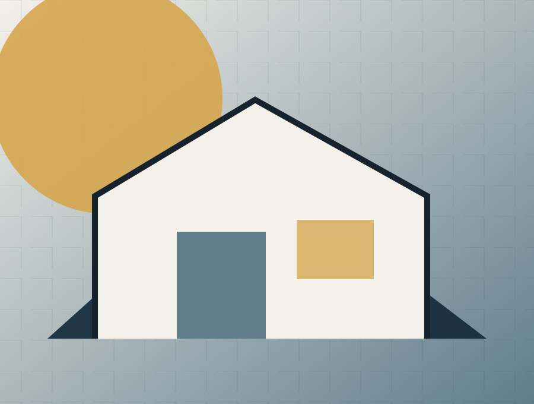

Hero
Látványkép, háznév (pl. "Casa Nero 180"), alcím (pl. "Luxus villa 4 hálószobával"), alapterület, szobaszám, technológia, kivitelezési idő. CTA: "Kérek tételes árat".
Csoportszintű biztonság, teljes választék és egy kézben vezetett otthonteremtés. A típusház termékoldal célja, hogy a látogató egyértelmű szempontokkal jusson el a következő megalapozott döntésig.
Csodálatos otthonok megfizethető áron.
Drive-forráshoz igazított tesztoldal · publikálás nélkül
Csoportszintű biztonság, teljes választék és egy kézben vezetett otthonteremtés.
Látványkép, háznév (pl. "Casa Nero 180"), alcím (pl. "Luxus villa 4 hálószobával"), alapterület, szobaszám, technológia, kivitelezési idő. CTA: "Kérek tételes árat".
Ikonok rövid üzenetekkel (pl. nagy nappali, háromgenerációs, panoráma).
Nagyítható, kattintható. Minden helyiséghez rövid magyarázat.
Rövid szöveg vagy videó arról, miért ilyen a ház elrendezése, miért ott a gépészet stb.
Szerkezetkész / fűtéskész / kulcsrakész / All In (prémium). Minden kártyán lista a tartalmazott tételekről.
Rövid lista a nem tartalmazott elemekről (pl. kerítés, bútorok).
Pergola, napelem, smart home, garázs, medence. Bepipálható (kalkulátorba integrálva).
Részletes infografika a választott technológiáról (rétegrend, hőátbocsátás, energetika, előnyök / kompromisszumok).
6–7 lépéses folyamatábra (Kapcsolatfelvétel, Előzetes mérnöki egyeztetés, Tételes ajánlat, Műszaki pontosítás, Szerződés, Kivitelezés, Átadás).
Hitel‑ és CSOK‑kalkulátor, havi törlesztő becslés, folyamat leírása.
2–3 hasonló ház fotóval, adatokkal, tanulságokkal.
Ajánlott hasonló modellek.
Név, telefonszám, email, építési helyszín, van‑e telek, van‑e terv, tervezett alapterület, kivitelezési szint, mikor szeretne kezdeni, üzenet, fájlfeltöltés. CTA: "Elküldöm az ajánlatkérést".
A preview nem küld adatot és nem tesz ajánlatot. Ár, határidő, garancia vagy szerződéses vállalás csak jóváhagyott evidence- és ajánlati rekord alapján jelenhet meg élesben.